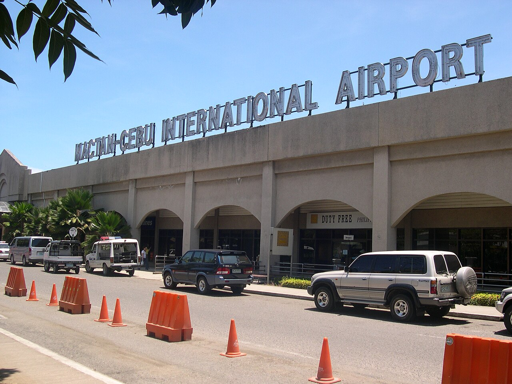
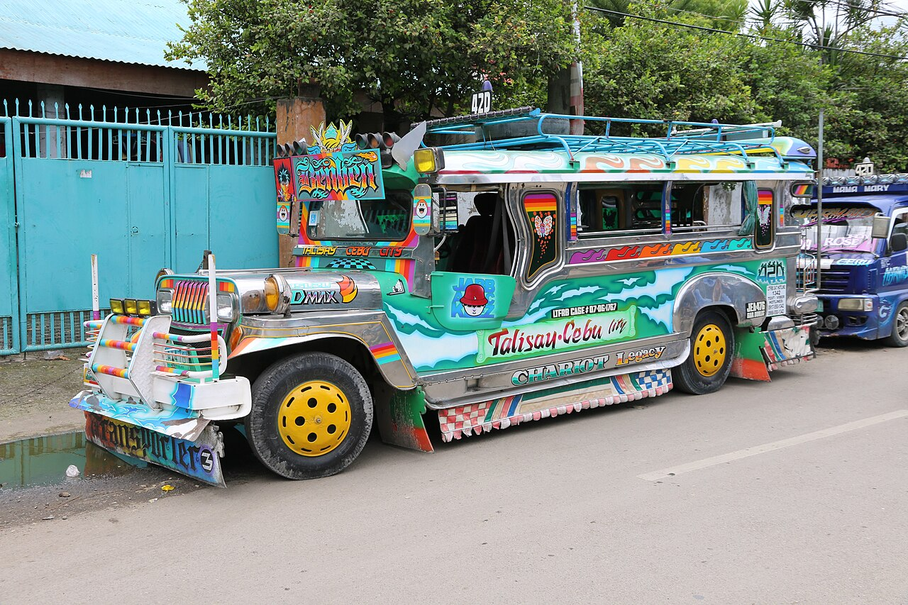

✈️ 去程航班详情（宿务航空 Cebu Pacific Air）
| 09:25 | 香港 T2 HKG | 🛫 5J273 宿务航空 | 经济舱 | 无餐 | 2h25m |
| 11:50 | 马尼拉 T3 MNL | ⏳ 中转 3h10m — 需重新托运行李！ |
| 15:00 | 马尼拉 T3 MNL | 🛫 5J581 宿务航空 | 空客321中 | 经济舱 | 无餐 | 1h30m |
| 16:30 | 宿务 T1 CEB | 🏁 抵达麦克坦-宿务国际机场 — 在此过移民关入境菲律宾 |
🏨 住宿怎么选（直接决定 D2 去墨宝顺不顺）
核心逻辑：D2 一早要从 Cebu South Bus Terminal（南巴士站） 坐 Ceres 巴士去墨宝（约 4h）。所以 Day 1 住宿务市区、紧挨南巴士站最省心——D2 打车 10-15min 直达，不用过桥进城。若住 Mactan 机场岛，D2 要过桥 45-60min，得 05:30 起床，缓冲差，不推荐。
| 推荐 | 酒店 | 价格/晚 | 评分 & 位置 | 为什么适合你们 |
| ⭐首选 | Pacific Pensionne ↗ | ≈$22 ≈160 RMB |
8.1 分 4200+ 评 步行到南巴士站 |
住客评价明确提到"near South bus terminal if heading to Oslob/Moalboal"——正是你们路线；近圣婴教堂、麦哲伦十字架、Taboan 市场买伴手礼。预算友好、干净。 |
| 舒适升级 | One Central Hotel ↗ | ≈$40 ≈290 RMB |
8.6 分 8000+ 评 步行到南巴士站 |
有泳池+健身+24h 前台，房间大，适合想落地泡个泳池放松的两人。位置同样贴南巴士站。 |
| 特色 Heritage | Palm Grass Hotel ↗ | ≈$35 ≈255 RMB |
8.1 分 2700+ 评 近南巴士站 |
本地 Heritage 风格设计酒店，有泳池，文艺男生会喜欢，离南巴士站约 1km。 |
| 落地轻松备选 | Mactan 机场酒店 ↗ （如 Goldberry / BAI 等） |
≈$30-50 | 机场 5-10min | ⚠️ 仅当 D1 太累不想过桥时选；D2 需 05:30 起床过桥进城到南巴士站，缓冲差，不推荐。 |
💡 价格随季节浮动，以 Agoda/Booking 实时为准；两人一间，按"每间房/晚"计。建议订 可免费取消 的房型，台风季行程有变可退。
🗺️ Day 1 路线 · 实景 · 指引
机场 → 过桥 → 市区酒店 → 晚饭 → 玩，一图看懂空间关系与流程（下方实景照片为维基共享资源真实授权图；想看成片风格的小红书实拍，可 点此在你自己设备的小红书搜「宿务」↗）
① 交通路线图（机场 → 市区）
② 真实场景参考（实景照片 · 来源 Wikimedia Commons，CC 授权）




📌 说明：本想用浏览器在登录态下抓小红书「宿务」实拍，但实测小红书直接拦截了本机运行 IP（报错 error_code=300012 IP存在风险，连登录页都进不去），故无法从这边抓取。上方改为维基共享资源中的真实授权照片。你可在自己设备点 小红书搜「宿务」↗ 看博主实拍；若把具体笔记链接发我，我可代为抓取图片备份进 images/day1/real/ 同一目录并嵌入本页。
③ 入境流程指示
④ Grab 叫车步骤（机场 → 酒店）
宿务 MCIA 是免签指定口岸 ✓；行李多建议两人分工，一人看行李一人推车取件。
建议用 Grab App 叫车，价格透明可绑卡；避开航站楼"拉客司机"私下议价。
住市区近南巴士站，D2 早上打车 10-15min 即到 South Bus Terminal 坐去墨宝的 Ceres 巴士。
🎯 Day 1 晚上玩什么（3 选 1，D2 要早起建议别太嗨）
① 轻松逛吃（推荐 ⭐）：SM City Cebu / Robinson's Place（市中心，打车 10min）。吹空调、换汇、买水、激活电话卡，楼下大食代吃顿菲律宾快餐，21:30 前回酒店。
② 夜景晚餐：打车去 Top of Cebu 山顶餐厅，俯瞰全城夜景 + 吃烤乳猪，氛围好；约 22:00 回，注意打车安全（用 Grab，记车牌）。
③ 老城夜游（谨慎）：Colon Street 老城区夜市感强，但夜晚人流杂、扒手多，两人同行、手机挂绳、不露富，23:00 前回。新手首晚不建议。